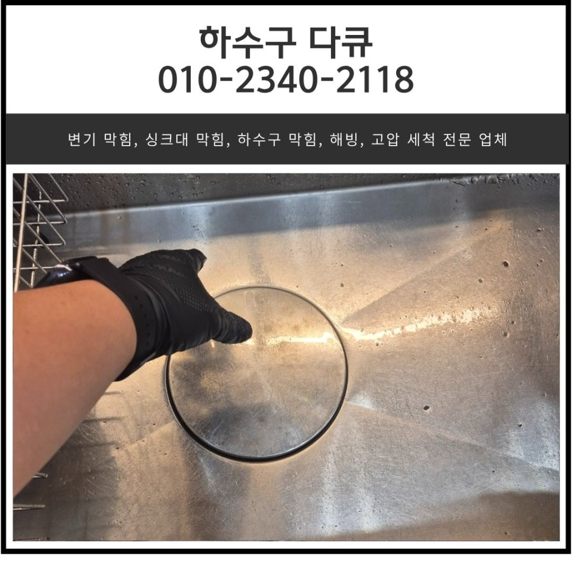
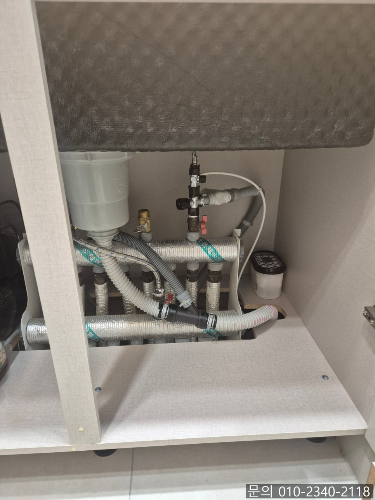
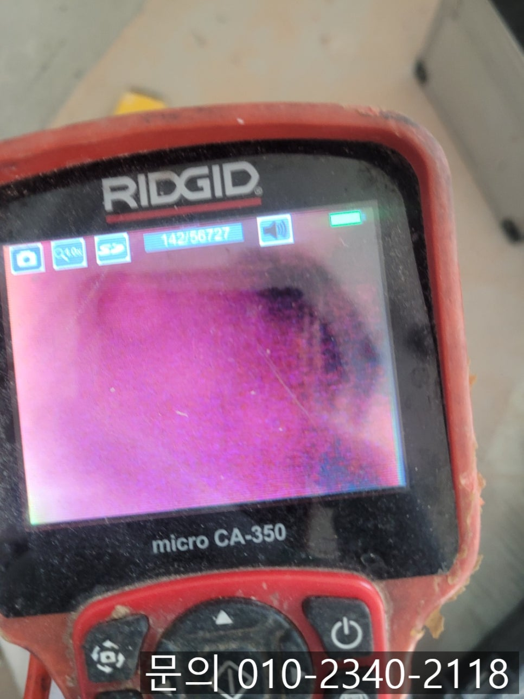
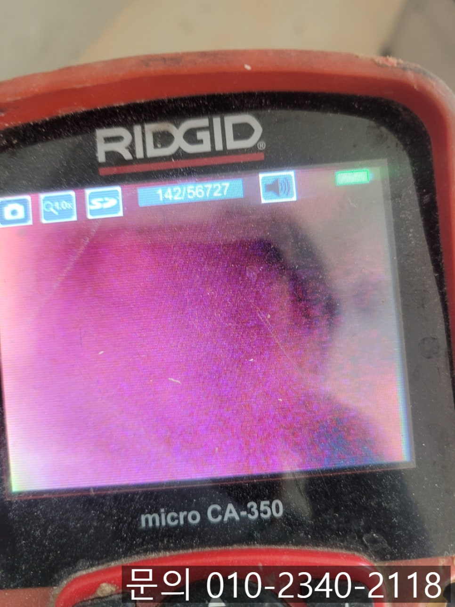
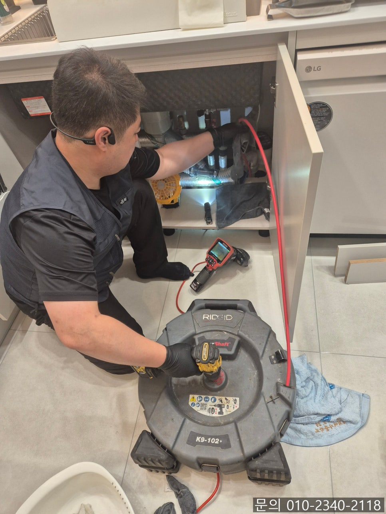
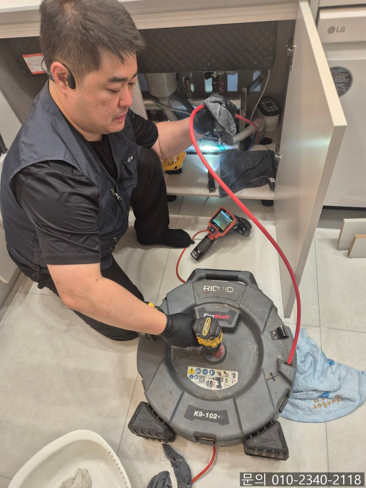
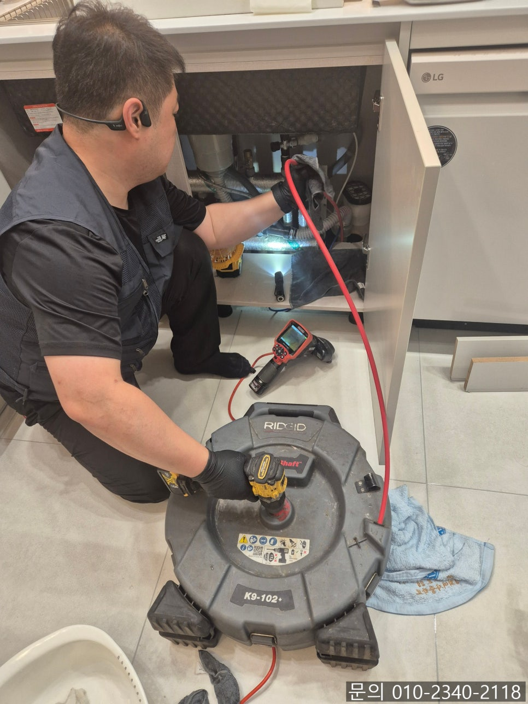

🏠 영통동 아파트 싱크대 막힘 수원 망포동 하수구 물 넘침 해결하는 설비 업체
수원 망포동 싱크대막힘 전문 시공 후기

📋 작업 개요
- 위치: 수원 망포동, 망포동, 수원
- 서비스 유형: 싱크대막힘, 하수구막힘, 배관막힘, 누수수리, 역류해결, 뚫는업체, 배관청소, 설비공사
- 작업 일시: 2025. 6. 15. 13:33
- 업체명: 하수구수사대 (010-5615-2118)
🔍 문제 상황
안녕하세요.
영통동 아파트 싱크대 막힘, 수원 망포동 하수구 물 넘침 해결하는 설비 업체 하수구 다큐입니다.
영통동 아파트 싱크대 막힘이 발생하게 되면 주방을 책임지고 있는 주부님들께서 가장 큰 불편을 느끼시게 될 거예요.
주방 정리가 제대로 되어 있지 않으면 집안 전체가 지저분해 보이고, 하수구에서 냄새도 올라오다 보니 살림을 꽤 하시는 주부님들은 영통동 아파트 싱크대 막힘이 발생하면 바로 하수구 전문가를 섭외해 배관 청소를 요청하시는 경우가 많습니다.
이번에 하수구 다큐가 직접 다녀온 현장을 소개해 드릴 건데요.
이번 현장의 경우 최근에 이사를 오시면서 인테리어를 진행한 가정집이었습니다.

🔎 원인 분석
💡 전문가 진단: 정밀 진단 장비를 사용하여 슬러지의 고착 여부를 판명하고 타격/세척 작업을 실시했습니다.
리모델링 공사를 하면서 싱크대를 비롯해서 모든 주방 가구를 교체하고 입주하셨는데요.
한 달도 지나지 않아 영통동 아파트 싱크대 막힘이 발생해 연락을 주셨습니다.
아무래도 깨끗하게 리모델링한 실내에 하수구 물 넘침이 발생하게 되면 가구들도 손상될 수 있다 보니 수원 망포동 하수구 물 넘침 해결하는 설비 업체 하수구 다큐는 신속하게 장비를 챙겨 40분 만에 현장에 도착했어요.
우선 눈으로 싱크대의 상태를 파악한 다음 정확한 막힘의 원인을 파악하기 위해 내시경 카메라를 싱크대와 연결되어 있는 하수구 내부로 넣어 살펴보기로 했습니다.
내시경 카메라로 촬영한 배관 내부의 모습인데요.
내부에 기름 슬러지와 각종 이물질들이 정말 많이 쌓여있는 모습을 어렵지 않게 확인할 수 있었습니다.
그뿐만 아니라 인테리어 공사 과정에서 흘러 들어간 건지 각종 흙 먼지와 이물질들이 쌓여있는 상태였어요.

🔧 작업 과정
물을 틀어서 테스트를 진행하자 물이 흘러내려 가기는 하지만 얼마 지나지 않아 물을 소화해 내지 못하고 싱크대 위로 넘쳐 올라오는 것을 확인할 수 있었습니다.
수원 망포동 하수구 물 넘침 해결하는 설비 업체 하수구 다큐는 고객님께 싱크대 배관 청소하는 방법에 대해 설명해 드렸어요.
작게 구멍을 뚫어 통수 시켜주는 작업으로 하실지, 아니면 배관 내부에 쌓인 이물질을 모두 제거하는 작업으로 진행하실지 작업 방법과 발생되는 금액에 대해 설명해 드렸더니, 배관에 이물질도 많고 주방에서 냄새도 좀 올라오는 것 같다며 쌓여있는 이물질을 모두 제거해달라고 요청하셨습니다.
우선 배관 내부에 쌓여있는 이물질을 석션을 사용해 빨아드려 제거하는 작업을 진행했어요.
석션 작업만으로도 정말 많은 양의 이물질이 제거되는 것을 확인할 수 있었습니다.
아마도 이전에 거주하셨던 분께서 하수구 청소를 진행하신 적이 없으셨던 것 같았어요.
석션으로 많은 양의 이물질을 제거했지만 여전히 제거되지 않은 이물질들이 많다 보니 플렉스 샤프트 장비를 이용해 청소를 진행하기로 했습니다.
플렉스 샤프트 장비는 노즐 끝에 달린 체인이 배관 내부에서 회전하면서 내부에 쌓여있는 이물질을 타격해 제거하는 작업을 하게 됩니다.
워낙 많은 양의 기름 슬러지와 음식물 찌꺼기가 쌓여 있었고 거기에 시멘트 가루나 각종 먼지들이 떨어져 쌓여있다 보니 작업은 생각보다 더 길어졌는데요.
그래도 최대한 꼼꼼하게 내시경 카메라로 살펴보면서 작업을 진행하자 모든 이물질이 제거되고 깨끗해진 배관 내부를 확인할 수 있었습니다.


✅ 작업 완료
마지막으로 모든 작업을 마치고 난 뒤 통수 작업을 통해 막힘이나 역류 등이 발생하지 않는지 테스트도 진행해 드리고 작업을 마무리했습니다.
싱크대 막힘의 경우 단순한 막힘으로만 생각하실 수 있지만 방치하게 되면 아래층으로 누수가 이어질 수 있다 보니 문제가 발생하게 되면 최대한 빠르게 원인을 찾아 해결하시는 것이 중요합니다.
경기도 수원시 영통구 봉영로 1612 7층 710-A19호




⚠️ 베란다 누수 및 방수 관리 방법
- ✅ 비가 많이 올 때 창틀 주변이나 아래층 천장에 얼룩이 생기는지 정기적으로 확인해 보세요.
- ✅ 우수관 주변 실리콘 마감이 들뜨거나 깨진 틈새가 있는지 손상 여부를 수시로 체크하세요.
- ✅ 베란다 바닥 타일의 줄눈(메지)이 소실되면 그 틈으로 물이 침투하여 누수가 유발됩니다.
- ✅ 누수 의심 증상 발견 시 방치하면 아래층 손실이 커지므로 즉시 전문가의 진단을 받으십시오.
💡 핵심 정리
- 확실한 장비 작업(내시경 점검 및 샤프트 스케일링)으로 원인을 뿌리 뽑습니다.
- 작업 후 1년 이내에 동일한 부위 재발 시 100% 무상 A/S 서비스를 보장합니다.
- 서울 · 경기 · 인천 전 지역에 24시간 언제든 긴급 출동할 수 있도록 항시 대기 중입니다.
❓ 자주 묻는 질문 (FAQ)
🚨 수원 망포동 싱크대막힘 문제로 고민이신가요?
정확한 원인 진단과 확실한 시공으로 재발 없는 해결을 약속드립니다.
24시간 긴급 출동 | 서울 · 경기 · 인천 전지역 | 1년 내 재발 시 무상 A/S